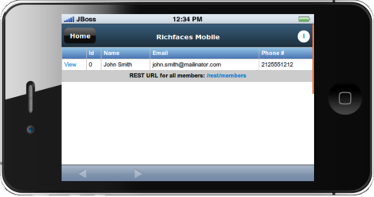
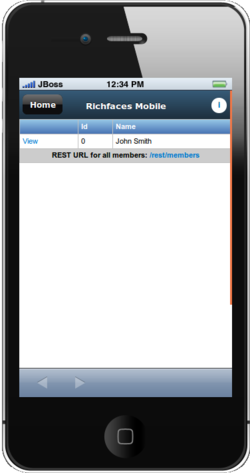
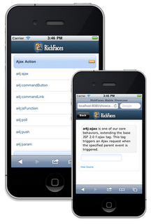
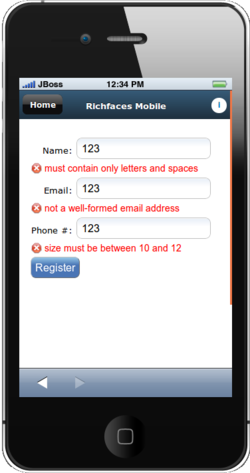
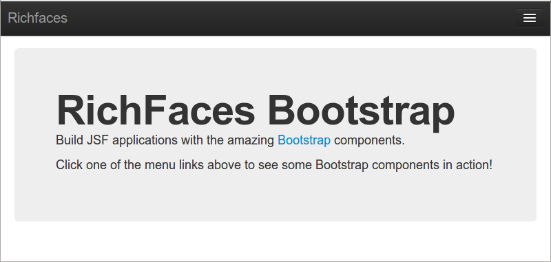

JBoss Forge
Productivity, Reliability, Testability
- Lincoln Baxter, III
- Senior Software Engineer, Red Hat
- 06.26.12
- Welcome!
@lincolnthree
- Forge Project Lead
Wat?
- Getting started sucks
- Integrating stuff is hard
- Remembering things is ...?
- Repetition is pain
- Repetition is pain
- Repetition is pain
So what do we do?

No!
Our tasks for the day
- Get started
- Get integrated
- Get mental
- Get efficient
forge $
get-started
█
forge $
get-integrated
█
forge $
get-mental
█
forge $
get-efficient
█
Why Mobile?
I write desktop apps!
- It's not immediately obvious in many market areas that an organisation can benefit from a mobile application
-
"My Users need a desktop application!"
- complex interface
- data entry requirements
- sit at their desk all day
- need a mouse
- Of course, we have a game changer
Smartphones!
- [Hold up my phone]
- These little devices in everyone's pocket, with enough computint power packed in them to compete with desktop PC's
-
This ha provided your users and customers with the means to access your data anywhere.
- Not the same kind of interaction as on a desktop app
- Use cases may be different, but no less valid.
- For instance, a use case may be an inventory status, rather then dta entry
- Here's a photo of Martin Cooper (the inventor of the cell phone) holding the famous motorolla brick phone
- For me it's a shocking reminder of how far mobile phones have come, in such a short time.
Mobile phones are everywhere!
- > 1 billion mobile users today
- By 2014 there will be more mobile users than desktop users
-
Granted these aren't all smartphone users, but
- the trend is such that mobile phones are increasing in complexity
- further driving the need for mobile apps.
Choose: Native app or Mobile
- Native:
- Responsive
- Touch-specific controls
- Native L&F
- Web:
- Common across platforms
- HTML 5 / CSS 3 / javascript
- Those of you who have looked at developing mobile apps know you have a choice to make
-
Native:
- [see advatages above]
- but there are too many platforms to be able to develop for the all
-
Web:
- Conversely the web is ubiquitous accross platforms
- but traditionally doesn't offer the native advantages
- Then there is the hybrid approach which tries to offer the best of both worlds (See Aerogear Summit presentations)
Choose: Native app or Mobile
So how do I choose?
- So how do we choose?
- On the one hand, we have native with the advantages it offers, but an increased development burden
- On the other hand we have web apps with their ubiquitous run-time, but potential platform limitations
- It seems we are "damned" either way
-
I love this graphic
- it was on my father's coffee cup grownig up
- when I was young it was just a funny picture
- but every year I understood a little more the predicament it was describing
- now I think of it whenever I'm faced with any unpleasant dilemma
- but not to worry - I have an answer for this one!
You need a mobile web app regardless!
- You need a mobile web app regardless!
- Not everyone can nor will install your native app, even if it is better
- For consumer-facing applications this is obvious - it's not practical to install an app for *every* store one shops at
-
I was in a hardware store recently - I wanted to by a garden hose and some related accessories
- I wanted to price compare with a neighboring store
- On visiting with website on my mobile phone, I was prompted to install a native application - No way!
- Fall back to a mobile web-app that more than meeted my needs
- Not always the case - some mobile web apps are horrible!
- Let's mare sure the ones we write aren't!
Mobile Web is Ready
- The good news is today's mobile web is ready and well suited to deliver full featured mobile applications.
- With HTML 5, CSS 3, and the latest javascript API's
- we can access many of the phones features and compete toe-to-toe with native apps
target = Webkit
- We can further simplify our story by focusing on webkit based browsers.
- This covers the browsers that ship with the Android, iOS, blackberry and Symbian OS'es
- These also happen to be today's leading mobile platforms, justifying our focus on webkit browsers
- This focus then allows us to target the subset of HTML 4 and CSS 3 features supported on webkit
JavaScript APIs
- Geo-location
- Local Storage
- Web Sockets
- Canvas
- Drag and Drop
- bit.ly/webkit-comparison
- What javascript API's do we have available?
- There are many, but some of the most interesting ones for JSF components are listed here
-
You can imagine the kind of JSF Components we can make with these API's
- Data Table pages that pre-fetch and store the data locally
- Push applications using web sockets to respond to server-side events - (in fact we have this one already!)
- Canvas driven components drawing arbitrary graphics (Dials, sliders, etc)
- The possibliities are seemingly litmitless
- Let's look at some specific things we can achieve leveraging the HTML 5, CSS 3, and javascript APIs
Hide the Location bar
hideURLBar: function() {
//hide the url bar on mobile devices
setTimeout(scrollTo, 100, 0, 1)
}
- Here's a screen-shot of a mobile web-app
- Notice there is no location bar
- It doesn't "look" like a web browser
- Achieving this is simply a matter calling the DOM method "scrollTo", here invoked after a timeout to allow the page to load
Orientation Detection
 - Another "must have" for mobile apps is orientation detection.
- When we have more screen real estate available, we should use it!
- In this trivial example, we conditionally display table columns depending on the orientation of the device.
Orientation Detection
/* portrait screen width */
@media screen and (max-width: 480px) {
.portrait {
}
.landscape {
display:none;
}
}
/* landscape/desktop device widths */
@media screen and (min-width: 481px) {
.portrait {
display:none;
}
.landscape {
}
}
- We can easily achieve this with some simple CSS leveraging the max-width CSS 3 property
- When the with of the display is less than the value specified (480px) we hide any element wit the CSS class "landscape"
- We've also created the converse "portrait" css class, Although it tends to be less useful in practice.
Hardware acceleration
Activate the GPU for compositing each page
.page {
...
-webkit-transform: translate3d(0, 0, 0);
}
- We can achieve a performance boost for our mobile web apps wit this simple CSS rule
- When this rule is present, the browser will activate the GPU for rendering visual effects
- In fact the presentation you are looking at now is written in HTML 5, and uses the same CSS property to power the page transitions
- [Press ESC to zoom out]
- Again, we see seemingly limitless possibilities of what we can achieve with HTML 5.
HTML 5 presentation
<section>
<h2>The plan</h2>
<ul>
<li>Why the Mobile Web?</li>
<li>Why JSF?</li>
<li>Why RichFaces?</li>
</ul>
</section>
- To drive the point home, here is the markup used to create on of the introductory slides
- Nothing more than the HTML 5 "section" tag, and a conventional HTML unordered list
- The rest of the style and behaviour comes from CSS 3 and javascript
Plethora of Frameworks
|
|
+ JSF !!
- There are a number of frameworks out there dedicated to simplifying this space and enabling developers to more easily and effectively write web applications.
- Perhaps you've already heard of some of these - all great frameworks in their own right
- I'm here today to convince you that JSF is a worthy candidate to be added to this list
Why JSF?
What do we like about JSF?
- What does JSF have going for it that we should be sure to consider it for mobile use cases?
JSF Because...
Standardized as part of Java EE
- The biggest plus for me with JSF is that it is a standard
- Multiple OSS implementations
- Healthy component vendor marketplace - again OSS
- No vendor lock-in!
JSF Because...
Ajax is baked-in
to the framework
- AJAX plays a huge roll in developing mobile web apps.
- With JSF 2.0, AJAX is front & center in the platform, ready for us to tap into to deliver fast and responsive applications
JSF Because...
Component-oriented
programming model
- Similarly we will rely heavily on javascript as we develop mobile web applications.
- But JSF components abstract away the javascript
- We write to a standardized component model, rather than to arbitrary javascript libraies
- As I'm fond of saying on behalf of the RichFaces project: "We write the javascript so you don't have to"
JSF Because...

Facelets:
A powerful templating mechanism
- Facelets are one of the crown jewels of the JSF eco-system
- We have a highly expressive and compositable templating language
- Keep our view code DRY
JSF Because...
Build on our investment in JSF/RichFaces technology!
- Finally, let's use JSF to leverage our existing investment of people, infrastructure, time and money in JSF and RichFaces technologies
- Why should we start with something altogether new if we don't have to?
Adapting JSF to be “Mobile Ready”
-
Responsive
- Single Page programming model (via JSF AJAX)
-
Touch-specific controls
- CSS 3 styling
-
Mobile L&F
- Component libraries
- JSF is great, but it needs some help to be made "mobile ready"
- To create responsive applications, we want to make heavy use of AJAX and avoid full page loads.
- To achieve thos, we adopt a single page programming model, which unfortunately is not well supported by the JSF navigation system - at least not yet ;)
- JSF Components need to be made Touch "compatible".
- For instance as a rule-of-thumb the touchable area should be 1cm x 1cm.
- Fortunately achieving this is simply a matter of providing the right CSS skin
- Finally we want to achieve a mobile L&F.
- The responsibility here falls to us, the component providers
- We'll take a close look at the RichFaces mobile components shortly, but first let's see what we can do with "vanilla" JSF
Device Detection
- One key requirement is to have the ability to tailor the content to the viewing device
- We've seen earlier that we can use CSS techniques to tailor the display based on the screen size
- But this is a client-side technique and works after the content is delivered to the browser
- If we want to seamlessly provide both mobile and desktop applications, we need to know sooner:
- on the server before the content is rendered and delivered
Device Detection
User Agent String
Mozilla/5.0 (X11; Linux x86_64) AppleWebKit/536.5 (KHTML, like Gecko) Chrome/19.0.1084.56 Safari/536.5
- Fortunately this is possible by inspecting the "user-agent" string which is sent from the browser with the initial request.
-
Here we can see a typical user agent, and can infer some significant details from it. For instance:
- The browser claims to be Mozilla compliant (a useless claim nowadays)
- The OS is 64-bit linux
- The browser is a webkit browser
- What's important here is that it's obvious from this user-agent string that this is a desktop browser, and not a mobile one.
- The server knows this from the time of the initial request and we can react accordingly
Device Detection
Server Side: UAgentInfo
public class UAgentInfo implements Serializable {
...
public void initDeviceScan() {
this.isIphone = detectIphoneOrIpod();
this.isAndroidPhone = detectAndroidPhone();
this.isTierTablet = detectTierTablet();
this.isTierIphone = detectTierIphone();
this.isTierRichCss = detectTierRichCss();
this.isTierGenericMobile = detectTierOtherPhones();
}
...
- Fortunately we don't have to parse the user-agent ourselves.
- We can leverage librairies to do this for us, like the UAgentInfo library shown here.
- We can use this library to determine whether the request originated from:
- [ go thorugh the API above ]
Device Detection
JSF Bean: UserAgent
@Model
public class UserAgent {
private UAgentInfo uAgentInfo;
@PostConstruct
public void init() {
FacesContext context = FacesContext.getCurrentInstance();
HttpServletRequest request = (HttpServletRequest)
context.getExternalContext().getRequest();
String userAgentStr = request.getHeader("user-agent");
String httpAccept = request.getHeader("Accept");
uAgentInfo = new UAgentInfo(userAgentStr, httpAccept);
}
- Using this library from JSF is then remarkably easy.
- Here we have a CDI bean that instantiates an instance of UAgentInfo and feeds it the user-agent string from the FacesContext
- We can then access the UAGentInfo's methods from our JSF beans, or from expression language to tailor our response accordingly
Device Detection
URL Rewriting: ReWrite
public Configuration getConfiguration(final ServletContext context) {
return ConfigurationBuilder.begin()
.defineRule()
.when(Direction.isInbound()
.and(Path.matches("/").or(Path.matches("/index.jsf")))
.and(UserAgent.isMobile())
).perform(Forward.to("/mobile/"));
}
- In fact, in our sample applications we take this one step further and make use of URL rewriting library called "ReWrite"
- Rewrite has UAgentInfo built in, and we can define a simple rule to redirect mobile requests to a mobile specific page
- The rule here can be interpreted as:
- "If the requested page is the index page,and the request comes from a mbile browser, then redirect the request to a mobile specific page"
- Rewrite works at the servlet level, before the request even gets to JSF.
- This makes it transparent from a JSF perspective.
The RichFaces value add
For mobile JSF apps
- By now we have a good idea of why we want to use JSF in our mobile web applications
- But why use RichFaces?
- What's the RichFaces value-add?
The RichFaces Showcase
- Mobile compatible components
- http://showcase.richfaces.org
- The most obvious answer is the UI components
- With RichFaces 4.1 and 4.2 we are shipping "mobile compatible" RichFaces components
- These are our existing components adapted to mobile environments through the inclusion of some mobile specific CSS
- Let's take a quick look at our showcase on a mobile browser to see some of these components in action
- [ demo the RichFaces mobile showcase ]
a4j:push
Facelet Source
<a4j:push address="pushCdi"
ondataavailable="jQuery('<li/>').text(event.rf.data)
.prependTo('#messages')" />
<ul id="messages" />
Java Source
@Inject
@Push(topic = "pushCdi")
Event<String> pushEvent;
public void sendMessage() {
pushEvent.fire("My Message");
}
- In addition to the UI components, RichFaces also offers a number of non-visual components
- In particular the a4j:push component is particularly valuable in mobile applications
- where we can have the mobil clients respond to server-side events
- Here we see some sample code demonstrating how simple the push component is to use
- On our facelet page, we place an a4j:push component addressing a particular topic
- then in our backing bean we use CDI to inject a pushEvent for the same topic
- finally we fire a message from the pushEven in our backing bean, and respond to that event on the client-side
- here we respond to the event with a javascript event listener, but we could equally-well trigger an ajax update
- I should also point out that CDI is not required, we also provide a non-CDI APi for working with the push component
a4j:push in tweetstream
JBW 2011 Keynote
- Perhaps you remember the tweetstream demo from last year's JBoss world keynote?
- the tweetstream demo is a terrific example of using the RichFaces push component in a mobile JSF application
- we'll go through a demo of it shortly, when we get to our sample application
Client-side validation
- Perform validation locally
- Another good example of the RichFaces value-add is our support for client-side bean validation
- We provide a javascript implementation of the Java EE bean validation spec, and validate input values before they are sent to the server
- This avoids a round-trip to the server, and improves the responsiveness of your mobile applications
- With mobile web apps, the more we can do locally, the better off we'll be
a4j:jsFuntion
A facelet component interface to the JSF AJAX API
<a4j:jsFunction name="updateName" render="showname">
<a4j:param name="name" assignTo="#{functionBean.text}" />
</a4j:jsFunction>
- Lastly, I'd like to call out the a4j:jsFunction component.
- Working with mobile web-apps can involve writing a lot of javascript
- The a4j:jsFunction provides a powerful mechanism to interfacing javascript in the client with the JSF backend through the JSF Ajax API
- We'll see some sample code making use of this component also in our sample application
Case Study: “kitchensink” Quickstart
1
2
3
4
- Let's take a look at a more concrete "reql-world" example: here we see the JBoss-as kitchensink sample project.
- It's a CRUD application that uses many Java EE APIS's and there corresponding JBoss implementations.
-
We'll take a look at how we "mobilized" this application
- First using vanilla JSF with custom CSS & Javascript
- then we'll introduce RichFaces to simplify the app
- lastly we'll look at some experimental components that further simplify things
- Let's start with breaking the application down into logically to identify the mobile views we'll require
- [ click through the reveal.js fragments ]
kitchensink: “Mobilized”
-
We introduced “slidfast”:
- CSS + JavaScript
- Here's a screenshot of the "mobilized" application.
- You can see here the view is single purpose: this is the home page of the mobile application, with nice big clickable menu buttons (even with my fat fingers! )
- The custom CSS and javascript resources required to make this work are packaged together into our "slidfast" library
- Let's spend a few minutes running the application to get a feel for what it's all about
- [ demo the app ]
Mobile compatible with slidfast
A collection of lightweight CSS and Javascript assets
- the key thing to keep in mind with slidfast is that it's designed to be light-weight
- Slidfast is just what's required to write your mobile app the way you want, without requiring one to adopt a whole framework
- This is in contrast with many of the other "hevy-wight" mobile frameworks we mentioned earlier
- Slidfast is however AJAX centric, and works best when we write our applications with a single page programming model
“Vanilla” JSF mobile facelet
<?xml version="1.0" encoding="UTF-8"?>
<ui:composition template="/WEB-INF/templates/mobile.xhtml"
xmlns:ui="http://java.sun.com/jsf/facelets"
xmlns:f="http://java.sun.com/jsf/core"
xmlns:h="http://java.sun.com/jsf/html">
<ui:define name="content">
<h:outputStylesheet name="mobile.css" library="css"/>
<h:outputScript>
//initialize mobile RichFaces with slidfast
slidfast({
defaultPageID:'home-page',
callback: 'handleHashChange',
backButtonID: 'back-button'
});
</h:outputScript>
<div id="browser">
<header>
<div>
<div id="back-button" class="hide-button">Home</div>
<div id="info-button" class="right-header-button info-link">
<a href="#about">i</a>
</div>
<p>Mobile JSF</p>
</div>
</header>
<h:form id="mobileForm">
<div id="page-container">
<div id="home-page" class="page stage-left">
<ui:include src="/mobile/home.xhtml"/>
</div>
<div id="new" class="page stage-right">
<ui:include src="/mobile/new.xhtml"/>
</div>
<div id="list" class="page stage-right">
<ui:include src="/mobile/list.xhtml"/>
</div>
<div id="about" class="page stage-right">
<ui:include src="/mobile/about.xhtml"/>
</div>
</div>
</h:form>
</div>
</ui:define>
</ui:composition>
- Let's look closer at what the mobile facelet page looks like (Don't worry about the font-size, we'll zoom in)
-
This is for a vanilla JSF application + our slidfast CSS and javascript resources (we'll look at RichFaces enhancements to this shortly)
- We are looking at a facelet composite page that uses a specific mobile template (HTML 5 doctype, slidfast resources)
-
Here we initialize the slidfast library, defining:
- the initial/default page id,
- the name of a callback method we'll see shortly
- the id of the button we'll use for backward navigation
- the div with id "browser" is styled by slidfast to fill up the entire page
-
the html 5 header tag is used to set the title bar accross the top of the page
- here's where we put the back-button with the id we configured above
- notice we navigate using location hashes - we'll see below how slidfast uses the location hash to slide content in and out of the view
- here we see a series of div's with css class "page" - this is our single page programming model
- this is the juicy part, let's bring this up on a page on it's own
Single-page programming model
<h:form id="mobileForm">
<div id="page-container">
<div id="home-page" class="page stage-left">
<ui:include src="/mobile/home.xhtml"/>
</div>
<div id="new" class="page stage-right">
<ui:include src="/mobile/new.xhtml"/>
</div>
<div id="list" class="page stage-right">
<ui:include src="/mobile/list.xhtml"/>
</div>
<div id="about" class="page stage-right">
<ui:include src="/mobile/about.xhtml"/>
</div>
</div>
</h:form>
- We can see a number of div elements with the page CSS class, each with an additional stage-* class
- These are the page elements that slidfast slides in and out
- The page ID activated is the one who's id is set in the location hash
- so if I want to activate the "about" page, I have to set the location hash to "about"
- Let's take a look at how we can manipulate the location hash to navigate through our pages
Manipulate the location hash
Directly, using html links
<a href="#about">i</a>
Using javascript
<rich:panelMenuItem label="Add Member"
onclick="location.hash='new'"
mode="client" />
- We can set the location hash directly using an html tag
- Or we can use a javascript listener on a component to set it
- either way, once the location hash is changed, slidfast will initiate the page transition
- A big advantage of using th location is hash is it supports backwards navigation - through our custom back button, or via the browser controls
- There is (at least!) one significant problem with the previous approach
- Can anyone guess what it is?
- The approach won't scale - we've front-loaded all our mobile pages
- We need an AJAX driven approach that loads pages as required, if we want to scale
Scale w/ dynamic ui:include
<div id="page-container">
<div id="home-page" class="page stage-left">
<ui:include src="/mobile/home.xhtml"/>
</div>
<div id="app-page" class="page stage-right">
<ui:include src="#{pageBean.page}"/>
</div>
</div>
- We can do this by making use of a ui:include tag with a dynamic src.
- The trick here is to trigger an ajax update when the location hash changes setting the pageBean property
- We'll first look at doing this with Vanilla JSF, leveraging the jsf.ajax javascript API
Update the PageBean - JSF
<h:inputHidden id="page" value="#{pageBean.location}" />
<h:outputScript >
var handleHashChange = function (page) {
var hiddenInput = 'mobileForm:page';
$(document.getElementById(hiddenInput)).val(page);
var options = {
execute: hiddenInput,
render : '@form',
onevent : function(event) {
if(event.status == 'success') {
slidfast.core.slideTo('app-page');
}
}
}
jsf.ajax.request(hiddenInput, null, options);
}
</h:outputScript>
-
Here we see the javascript necessary to invoke an ajax update when we change the location hash
- First we need somewhere to put the location hash so it can be submitted by the ajax request - we do this with a inputHidden element
- Here we define the "handleHashChange" listener we registered with slidfast during initialisation - this method will be called whenever slidfast detects a page change
- In that listener, we first grab a reference to our hidden input, and update it with the location hash value
-
Next we create an options object we will pass along with the jsf ajax request
- "execute" and "render are analagous to the same attributes in an f:ajax call
- with the onevent callback we trigger the slidfast page transition when the ajax call is successful
- Finally we invoke the jsf.ajax method to trigger the ajax call and associated page updates
- The value of the location hash gets stored in the "location" prooperty of the pageBean, and is used to specify what page to include in the dynamic ui:include
Update the PageBean - RichFaces 4.2
<h:outputScript target="head">
<a4j:jsFunction name="loadPage"
render="@form"
oncomplete="slidfast.core.slideTo('app-page')">
<a4j:param name="page" assignTo="#{pageBean.location}"/>
</a4j:jsFunction>
- We can simplify this by using the RichFaces a4j:jsFunction component
- Notice how we no longer need the hidden input, as the a4j:param component let's us update backing beans directly
- We still have the oncomplete callback that invokes the slidfast page transition
- This is what we "ship today", if you are writing mobile apps with the current RichFaces release, this is what we provide
- Let's take a sneak peak at some work-in-progress in our Sandbox
Update the PageBean - RichFaces Sandbox
<slidfast:pageChanger id="pageChanger" activePage="#{pageBean.location}" render="app-page" />
- (The Sandbox is the richfaces skunkworks, where we try out our new ideas and components before landing them into our component set)
- here we have a pageChanger that encapsulates the above javascript, and also provides some additional added value
- by allowing other components to take over the ajax rendering, in which case the pageChanger component only invokes the slidfast transition
“SlidFast” JSF mobile facelet
<?xml version="1.0" encoding="UTF-8"?>
<ui:composition template="/WEB-INF/templates/mobile.xhtml"
xmlns:ui="http://java.sun.com/jsf/facelets"
xmlns:h="http://java.sun.com/jsf/html"
xmlns:slidfast="http://richfaces.org/slidfast">
<ui:define name="content">
<h:outputStylesheet name="app.css" library="css"/>
<h:outputStylesheet name="mobile.css" library="css"/>
<div id="browser">
<header>
<div>
<div id="back-button" class="hide-button">Home</div>
<div id="info-button" class="right-header-button info-link">
<a href="#about">i</a>
</div>
<p>Richfaces Mobile</p>
</div>
</header>
<h:form id="mobileForm">
<slidfast:pageChanger id="pageChanger" activePage="#{pageBean.location}" render="app-page" />
<slidfast:pageContainer id="pageContainer">
<slidfast:page id="home-page" stage="left">
<ui:include src="/mobile/home.xhtml"/>
</slidfast:page>
<slidfast:page id="app-page" stage="right">
<ui:include src="#{pageBean.page}"/>
</slidfast:page>
</slidfast:pageContainer>
</h:form>
</div>
<h:outputStylesheet library="org.richfaces" name="rf-mobile-skin.css" />
</ui:define>
</ui:composition>
- Looking at the facelet again as a whole, we can see how the introduction of the slidfast components greatly simplifies the page
- The pageChanger component has replaced many lines of javascript
-
The pageContainer and page components have replaced the generic div elements. This offers a number of advantages
- The page component is a valid target for jsf ajax updates (so we don't need to wrap everything in an h:outputPanel)
- The use of CSS classes for imparting behaviour has been replaced with more meaningful attributes, like the "stage" attribute
- The result is a page that looks and codes more like JSF, and less like a HTML 5/javascript app
Responsive layout
- I'd like to wrap up this presentation with a look at another sandbox effort, where we are creating JSF components out of the twitter bootstrap CSS resources
- If you haven't yet heard of the RichFaces bootstrap project, be sure to check it out.
- Bootstrap provides a set of cross browser CSS and javascript resources you can use to build modern web applications
- I could do a whole presentation on bootstrap components and how they fit with JSF
- But the key point I want to raise here is the "Responsive Layout". Components adjust and resize themselves as the display size changes
- let's take a look at a demo of this
- [demo the bootstrap responsive layout]
- Hopefully you can see hoe building RichFaces applications with these components will lend itself nicely to mobile development
The end?
The beginning - of your mobile adventure with RichFaces!
- We've seen how mobile web-apps are a necessity in today's market
- and how JSF and RichFaces can be effective means of providing these web apps, particularly if we are already invested in the technology
- While RichFaces isn't required for building mobile JSF applications,we can see how the process is simplified by the introduction of javascript encapsulating mobile-specific components
- Finally we had a peek into the future, to see how RichFaces is going to further empwer us to build mobile web apps.
Credits
- http://www.flickr.com/photos/jdhancock/5845280258/
- http://leslycorazon.wikispaces.com/file/detail/head-silhouette-with-question-mark.png/319199232
- http://www.linuk.web.id/2010/09/biografi-singkat-linus-torvalds.html
- http://en.wikipedia.org/wiki/File:2007Computex_e21Forum-MartinCooper.jpg
- http://gigaom.com/2010/04/12/mary-meeker-mobile-internet-will-soon-overtake-fixed-internet/
- https://devcentral.f5.com/weblogs/macvittie/archive/2008/09/10/3604.aspx
- http://openclipart.org/detail/17302/groupe-by-czara1
- http://openclipart.org/detail/36571/tango-network-workgroup-by-warszawianka
- http://openclipart.org/detail/22860/money-bag-icon-by-chovynz
- http://openclipart.org/detail/48427/clock-by-palomaironique
- http://www.flickr.com/photos/ivyfield/4486938457/
{kind=link}
{kind=link}

GOING MOBILE With Your RichFaces Applications by Brian Leathem is licensed under a Creative Commons Attribution-NonCommercial-ShareAlike 3.0 Unported License.
Based on a work at github.com.
Permissions beyond the scope of this license may be available at https://github.com/bleathem/talks/tree/master/2012-JBW.
Additional Resources
Source code:
- JBoss-as Kitchensink quickstart
- JBoss-as Kitchensink quickstart | mobile w/ Vanilla JSF
- JBoss-as Kitchensink quickstart | mobile w/ RichFaces
Articles:
- HTML 5 Rocks article - introduces and motivates the slidfast approach
- RichFaces Mobile wiki page - all things RichFaces + mobile
- Getting Started With Mobile RichFaces
Stay in the loop
- Project website: http://richfaces.org
- Twitter: https://twitter.com/#!/richfaces
- Google+: http://richfaces.org
- RichFaces Forums: https://community.jboss.org/en/richfaces?view=discussions
- Blog feed: http://planet.jboss.org/feed/richfacesall
- IRC: #richfaces
Later today:
-
BOF: What's New in Java Frameworks for Web, Cloud, & Mobile
-
1:20 pm - 2:20 pm